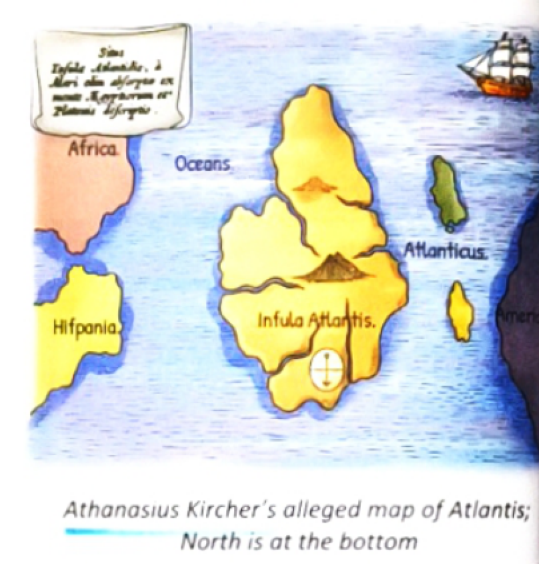
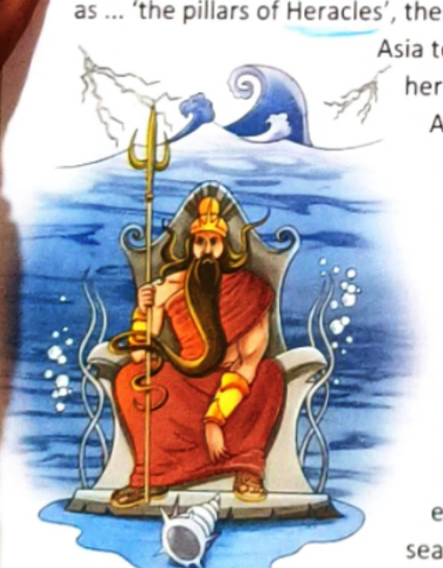
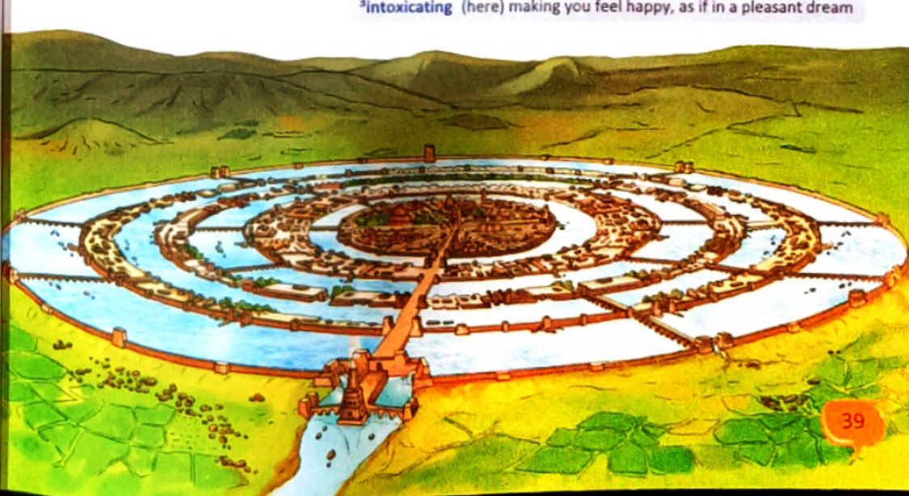

The Legend of the Sunken Continent • Recorded by Plato in Timaeus & Critias (360 B.C.E.)
Class 7 Literature Theme: Exploration, Utopian Architecture & Fall Concentric Rings of Land & Water
Starter: Wanderlust & Unexplored Lands (KWL)
Despite spectacular achievements in modern science, there remain thousands of mysterious places waiting to be explored:
What lures people to travel: Curiosity for the unknown, yearning for ancient secrets, adventure, and rediscovering forgotten civilizations.
Dangers explorers face: Extreme weather, uncharted terrains, ocean trenches, high altitude, and loss of communication.
Necessary preparations: Thorough historical research, specialized navigation gear, physical resilience, and respect for nature.
Scene 1: The Riddle of Solon and Plato's Egyptian Records
The legendary lost city of Atlantis is one of the oldest and greatest mysteries of the world. Read on to find out more about this myth.
The story of Atlantis was first mentioned in two of Plato's dialogues, the Timaeus and the Critias, written in 360 B.C.E. While the Timaeus is an account of the creation and structure of the universe and ancient civilizations, Critias mentions an alleged historical tale of Atlantis.
Atlantis, the mythical city of dreams and incredible architecture, is thought to be one of the most extraordinary civilizations of the ancient world. It is rumoured that it vanished overnight, without warning. It sank, in a night and a day, into the ocean around 9,600 B.C.E. But it was never forgotten. It is as stimulating and fascinating as it has ever been.

Athanasius Kircher's alleged historical map of Atlantis (Note: Historical orientation has North at the bottom).
Plato writes in Critias that he heard the story of Atlantis from his grandfather, who had heard it from Solon, an Athenian statesman and one of the wisest of the ancient Greeks. Solon, who lived around 200 years before Plato's time, had learnt it from an Egyptian priest. According to the Egyptian priest, Atlantis had disappeared 9,000 years before Plato.
In his book, Plato described the location of Atlantis vividly: "For the ocean there was at that time navigable; for in front of the mouth which ... Greeks call, as ... 'the pillars of Heracles', there lay an island which was larger than Libya and Asia together." (Heracles here refers to Hercules; Asia here refers to Asia Minor, the western-most part of Asia.) In other words, it is in the Atlantic Ocean, west of the Strait of Gibraltar, beyond the Mediterranean.

Poseidon, Greek God of the Sea, founded the royal Poseidon Dynasty and appointed Atlas as king.
The myth goes like this: At the beginning of history, the Olympians decided to divide the earth between themselves and live peacefully. The island of Atlantis and the nearby land went to Poseidon, the god of the sea, who founded the Poseidon Dynasty. After a while, Poseidon appointed his first-born Atlas to be king of the island. The entire island, the capital city and the surrounding sea were all named after him—Atlantis.
Scene 2: The Concentric City & Technological Marvels
Atlantis was a superpower in the ancient world with 10,000 chariots and numerous bulls and elephants. It had fertile soil, plentiful pure water, abundant vegetation and such mineral wealth that gold was inlaid in buildings and was among the precious metals and stones worn as jewellery.
In the centre of the island were public baths that had fountains with natural hot and cold springs for health and vigour, and recreation areas. Atlanteans mined white, black and red stones for use in their construction. Slaves performed manual labour, allowing the elite to pursue knowledge, enjoy sporting events and continually improve upon an already thriving society. It had a glorious culture with wonderful palaces and temples, harbours and docks. The people of Atlantis lived in a golden age of harmony and abundance.

The utopian metropolis: Concentric circular moats of land and water connected by bridges, tunnels, and rock-carved canals.
Atlantis was apparently a technologically advanced society. In addition to magnificent architectural structures, a network of bridges and tunnels linked the concentric rings of land, and clever uses of natural resources provided security and abundance. This irrigation system ensured great harvests.
The water rings served as canals for trade and helped form a series of natural defenses that made an invasion of Atlantis extremely difficult. The circles of land had outer walls covered in brass, and the inner walls were made of the precious metal, orichalcum. Atlantis had an advanced form of governance and a skilled military. Many groves provided solitude and beauty; racetracks were used for athletic competitions. The flowers were so richly scented that they made the warm air intoxicating. Great herds of tame cattle grazed the pastures, and the water in the streams was as clear as crystal.
Scene 3: The Citadel of Poseidon and the Utopian Age
This island housed the magnificent palace that had amazing architecture to protect it from the harsh north winds. The Atlanteans built a citadel that was situated in the centre of Atlantis with a temple dedicated to Poseidon, the Greek god of the sea, bedecked in silver and gold.
Inside was a gold statue of Poseidon riding a chariot pulled by six winged horses. This temple served as the home of the primary ruler. The rulers of Atlantis would meet in this temple to discuss laws, pass judgements and pay tribute to Poseidon. They would pledge to obey and support the law.
The mythical island was enclosed within three circular moats of increasing width and separated by rings of land proportional in size. The first ring-shaped island had many small temples and beautiful gardens. The second ring of land had horse-racing tracks and army quarters for the king's bodyguards. There were bridges and tunnels for the ships to pass into the city around the mountain; they carved docks from the rock walls of the moats. A ship could sail right into the city when given permission by the king. There were excellent sailors who had explored the oceans of the world. Every day, the canals were full of sailing ships bringing important cargoes. The city's dockyards were busy even at night.
Living in this utopian land, the people had a lot of freedom. Great universities, observatories, libraries, laboratories and academies for people of all ages show that the legendary city was a hub of arts and sciences. Portions of the city were devoted to commerce and industry because the Atlanteans used the discoveries of their scientists and technologists as the basis of a flourishing trade with other nations.
Travellers to the city wrote glorious accounts of the skilled craftsmen who worked in precious metals; of the gentle sea breeze that cleared the smoke of their foundries from the air; of the busy markets where country folk sold the rich produce of their farms; and of the frequent festivals which brought throngs of Atlanteans singing and dancing into the streets.
This was a perfect state, where people obeyed the law and possessed goodness and wisdom and valued the true things in life, such as friendship and knowledge. They had wealth and luxury, and they were neither greedy nor dishonest. This lasted for many generations.
Scene 4: Ambition, War, and Catastrophic Destruction
Then, unfortunately, things began to change. The Atlanteans became ambitious. They decided to conquer the lands around the Mediterranean. Their large armies of well-trained warriors began to invade other nearby islands and to make the people their slaves. And then there were wars!
In about 9500 B.C.E., the Atlantean army clashed with warriors from Athens. Arrows darkened the sky, the hooves of the chariot horses were like thunder upon Olympus. The attempt to invade Athens and the Atlantean greed angered the gods.
They sent fire and earthquakes to submerge Atlantis into the Atlantic Ocean. The fire and the earthquakes were followed by a tsunami, and the island was flooded. By the time the seas became calm, Atlantis had disappeared from the face of the earth.
The race of Atlanteans was the most technologically advanced, powerful and prosperous ever seen. Yet their decline was swift and dramatic: within a day, the magnificent civilization had vanished!
"Was Atlantis real, or is it a legend? One thing is certain—the story continues to inspire people to investigate history and explore the world."
About Plato (428 – 347 B.C.E.)
Plato was an ancient Greek philosopher, the prized student of Socrates, and the teacher of Aristotle. In 387 B.C.E., he founded the Academy in Athens, the first institution of higher learning in the Western world. His philosophical dialogues, particularly Timaeus and Critias, remain our sole historical window into the legend of Atlantis.
Section A: Reading Comprehension MCQs
Test your understanding of the textbook text. Click an option to see immediate visual feedback.
Question 1 (Textbook p. 41)
The interest in the city of Atlantis has never declined because:
AThe famous philosopher Plato spoke about it.
BIt was one of the oldest civilizations.
CIt is believed to be a utopian civilization.
DIt disappeared mysteriously.
Correct Answer: (iv) It disappeared mysteriously. Explanation: The complete disappearance of a dazzling, technologically advanced superpower overnight in a day and a night makes Atlantis the ultimate unsolved riddle of world history.
Question 2 (Textbook p. 41)
The people of Atlantis lived in a golden age of harmony and abundance because:
APeople feared the king and obeyed him.
BThey were ruled by kind and fair rulers.
CThere was harmonious interdependence.
DLand and water were not polluted then.
Correct Answer: (iii) There was harmonious interdependence. Explanation: People obeyed the law, possessed wisdom and goodness, and valued true things in life like friendship and knowledge above greed.
Question 3 (Textbook p. 41)
The Atlantean civilization disappeared when people became:
AGreedy and ambitious.
BLethargic and weary.
CScientifically and technologically advanced.
DDisobedient and challenged gods.
Correct Answer: (i) Greedy and ambitious. Explanation: Once the Atlanteans turned to conquest, trying to enslave their Mediterranean neighbours and attacking Athens, their unbridled hubris and greed angered the gods.
Section B: Textbook Questions & Answers
Question 2a (Textbook p. 42)
Where did Atlantis find its first mention? Who had mentioned it?
Answer: Atlantis found its first written mention in ancient Greece around 360 B.C.E. It was recorded by the revered Greek philosopher Plato in two of his famous philosophical dialogues, Timaeus and Critias.
Question 2b (Textbook p. 42)
How did Plato learn about Atlantis?
Answer: Plato learned about Atlantis through an oral chain of wisdom. He heard the story from his grandfather (Critias), who had heard it from Solon, one of the wisest statesmen of Athens. Solon had travelled to Egypt around 200 years before Plato's time, where an Egyptian priest translated temple records documenting the catastrophe that had submerged the island 9,000 years earlier.
Question 2c (Textbook p. 42)
What in your opinion led to the destruction of Atlantis?
Answer: In my opinion, the destruction of Atlantis was brought about by uncontrolled human greed, hubris (arrogance), and moral decay. While the Atlanteans maintained their values of wisdom and friendship, they prospered. But when their wealth made them ambitious and imperialistic, they waged unjust wars to enslave others. According to the myth, this moral downfall provoked the wrath of the gods, who destroyed them with violent earthquakes, volcanic fire, and a devastating tsunami.
Question 2d: The Dream Civilization Spider Diagram
Key dimensions describing the legendary metropolis of Atlantis from textbook page 42:
1. Location
In the Atlantic Ocean, west of the Strait of Gibraltar (the ancient "Pillars of Heracles"), beyond the mouth of the Mediterranean Sea.
2. Architectural Design
Engineered into three concentric rings of water (moats) and rings of land connected by tunnels, bridges, and rock-carved canals for sailing ships. Inner walls lined with shimmering orichalcum and outer walls with brass.
3. Wealth
Bountiful harvests from volcanic soil, gold and gemstone inlaid buildings, vast mines of red and black building stone, herds of elephants, tame cattle, and 10,000 war chariots.
4. Magnificence
Natural hot and cold thermal baths, a towering royal citadel with a gold statue of Poseidon in a six-winged horse chariot, great universities, observatories, libraries, and intoxicating fragrant gardens.
5. Destruction
Greed and unprovoked invasion of Athens angered the Olympians. Submerged around 9500 B.C.E. within a single day and night by earthquakes, fire, and a catastrophic tsunami.
Vocabulary: Synonyms (Textbook p. 43)
Read this passage about rainforests and fill in the blanks with words from the help box corresponding to the clues in brackets:
Entering the rainforest environment means (a)
(tolerate) extreme humidity and putting up with the (b)
(scorching) heat and creatures that will (c)
(always) bite you, but it is worth the discomfort when you're experiencing the greatest nature show on earth. It can be one of the purest and most intense travel experiences. It is like a mystery waiting to be (d)
(solved). The dense rainforests are filled with (e)
(enormous) trees, (f)
(unusual) plants and (g)
(strange) animals. Interestingly, it also is home to (h)
(native) peoples who have lived in the rainforests for thousands of years.
Although the (i)
(belonging to a group) children do not go through formal schooling, the people in their community teach them how to (j)
(withstand) the hardships in the forest. They worship the forest and live a sustainable existence, meaning they use the land without harming the plants and animals. Unfortunately, these people have been losing their lives and the land. European explorers (k)
(subjected) them to diseases such as smallpox, measles and even the common cold against which these people had no (l)
(protection) at all since none of them had ever been exposed to these diseases before.
Grammar: Conjunctions (Textbook p. 44–46)
Conjunctions are joining words that link words, phrases, and clauses within a sentence.
Coordinating Conjunctions
Join words or clauses of equal grammatical rank: FANBOYS (For, And, Nor, But, Or, Yet, So). Example: "Andrew could either practise his football or watch TV."
Correlative Conjunctions
Pairs that work together in tandem: either... or, neither... nor, not only... but also. Example: "The kitten would neither stay indoors nor would it walk safely."
Exercise 2: Conversation Snippets (Textbook p. 45)
Use coordinating or correlative conjunctions to complete the conversations:
JAY: I think we are going to Lucknow for our school excursion. I hope you are joining us, Manish? MANISH: No, I can't join you guys. I would have loved to, [but] my mother's not been keeping well, [and] my dad [nor / and] my sister are here. Someone will have to be with Mum.
SARA: Are we going for a picnic this Sunday, Daddy? MR MEHRA: Well, [either] we are going for a picnic, [or] we are [going for a film later!] SARA: Yay!
Punctuation: The Semicolon (;) Masterclass
Two Golden Rules for the Semicolon:
1. To Link Independent Clauses: A semicolon joins two complete, independent sentences without a coordinating conjunction when the thoughts are closely linked.
2. In Complex Lists: A semicolon separates a series of three or more items when individual items already contain internal commas.
Textbook Exercise: Add Semicolons (p. 47)
Correctly punctuate the textbook sentences:
1. He wanted to go for a swim; we drove to the Swimming Club and sat around the park till he was in the pool.
2. She did the laundry; she has done it for the last three years.
3. They finished whitewashing the fence and planting flowers in the garden; they admired their work.
4. They planted vegetables; they will harvest them in August.
5. My favourite vegetable is the turnip; most people don't like it.
Multilingualism: Greek Roots in English (Textbook p. 47)
Acrobat
From Greek akron (tip/edge) + bainein (to walk). An acrobat is someone who walks on the edge or tiptoes on high wires.
Democracy
From Greek demos (people) + kratia (power/rule). Power residing in the people.
Dinosaur
From Greek deinos (terrible/fear-inspiring) + sauros (lizard). A fear-inspiring giant reptile.
Critical Thinking & Real-Life Connect (Textbook p. 42–43)
Question 1 (Textbook p. 42)
Why has the story of Atlantis been repeated for over 2,300 years after Plato's death?
Answer: The story of Atlantis endures because it speaks to two timeless aspects of the human imagination:
The Utopian Dream: Humanity's eternal aspiration to build an ideal society of sublime beauty, advanced technology, and peaceful harmony.
The Cautionary Tale (Hubris): It acts as a profound moral warning that no matter how mighty or prosperous a civilization becomes, unchecked arrogance, military greed, and ethical decay will inevitably bring about self-destruction.
Question 2 (Textbook p. 42)
Is it possible that this fabled city existed? Is it history or legend? Give two reasons.
Answer: While widely regarded as a philosophical allegory invented by Plato to teach civic virtue, many historians believe it may be rooted in real historical catastrophes:
The Minoan Volcanic Cataclysm (Thera / Santorini): Around 1600 B.C.E., the massive volcanic eruption of Thera generated colossal tsunamis that devastated the advanced Minoan civilization of Crete, echoing the sudden destruction described in Atlantis.
Geological Possibility of Submerged Lands: Rising sea levels at the end of the last Ice Age flooded vast coastal plains across the Mediterranean and Atlantic, leaving ancient memories passed down through Egyptian priests.
Cross-Curricular Connect: Sinking Lands & Global Warming (Textbook p. 43)
While Atlantis sank due to ancient mythic wrath, today entire real-world islands and coastal cities face submergence due to anthropogenic climate change, rising sea levels, and environmental degradation:
Venice, Italy
Known as the floating city, Venice suffers frequent Acqua Alta (high tide flooding) due to groundwater extraction and rising Mediterranean seas, prompting the multi-billion-euro MOSE floodgate barrier system.
Majuli Island (Assam, India)
The world's largest inhabited river island in the Brahmaputra River has shrunk from 1,250 sq km to under 400 sq km due to severe bank erosion, annual floods, and deforestation upstream.